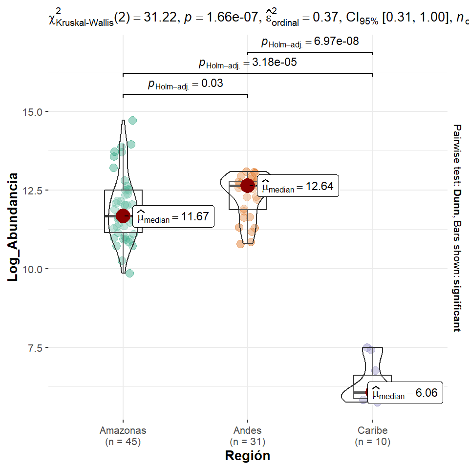

Code
#| label: setup
#| include: false
knitr::opts_chunk$set(
echo = FALSE,
warning = FALSE,
message = FALSE,
fig.width = 5,
fig.height = 5,
fig.align = 'center',
tidy = TRUE
)#| label: setup
#| include: false
knitr::opts_chunk$set(
echo = FALSE,
warning = FALSE,
message = FALSE,
fig.width = 5,
fig.height = 5,
fig.align = 'center',
tidy = TRUE
)El fitoplancton es un grupo de organismos microscópicos que constituyen la base de las redes tróficas en los ecosistemas acuáticos (Winder and Sommer 2012). Si bien la comunidad fitoplanctónica está conformada por organismos relativamente pequeños, estos son los responsables del 90% de la productividad primaria del océano y del 50 % en el planeta (Simon et al. 2008). Asimismo, fitoplancton sirve de alimento a organismos superiores como el zooplancton, los macroinvertebrados y los peces (Roldán and Ramírez, n.d.). Este grupo ha sido altamente utilizado como bioindicadores de la calidad del agua, en los procesos de contaminación orgánica y en la eutrofización de los ecosistemas acuáticos (Burkholder, Tomasko, and Touchette 2007).
Las dinámicas temporales y espaciales en las regiones tropicales presentan una influencia en la comunidad fitoplanctónica, lo cual produce diferencias entre las asociaciones de especies en las épocas seca y lluviosa (Ramírez Barón et al. 2016). Por tal motivo, la composición y abundancia de este grupo obedece principalmente a las variaciones en las condiciones fisicoquímicas (luz, pH, temperatura, salinidad, tasa de sedimentación y nutrientes) de los ríos, lagos y lagunas (Vicente et al. 2005). No obstante, en la actualidad, la calidad de los recursos hidrobiológicos se encuentran degradada por las múltiples actividades antropogénicas que ocasionan perjucios en la integridad y servicios ecosistémicos de estos (Santillán-Aredo and Guerrero-Padilla 2018). Todos los cambios que ocurran en la calidad del agua trae consigo fluctuaciones en las variables fisicoquímicas y cambios en las comunidades bióticas, por tal motivo, es necesario determinar la relación entre la abundancia de las especies fitoplanctónicas y las variables fisicoquímicas de los ecosistemas acuáticos.
Explorar la relación entre variables fisicoquímicas del agua y la estructura del fitoplancton en 10 lagos pertenecientes a las regiones Caribe, Andina y Amazónica de Colombia.
La base de datos que se utilizó para este informe contiene información sobre la abundancia obtenida de varios grupos de fitoplancton en diez lagos de Colombia y las características fisicoquímicas de cada uno de ellos. En cada uno de los lagos, se realizaron mediciones en varios puntos de muestreo. Cabe aclarar, que los lagos se encuentran repartidos en tres regiones geográficas del país. Cada fila de la matriz de datos representa una muestra tomada en un punto de muestreo específico. Estos datos fueron obtenidos de un banco de bases de datos utilizadas en un curso de estadística multivariada en un pregrado de Biología y procesados para evaluar relaciones y diferencias entre regiones. Las variables categóricas corresponden a los nombres de los lagos y a la región geográfica a la que pertenece cada uno. Las variables fisicoquímicas incluyen mediciones de nutrientes importantes en los ecosistemas acuáticos: nitrito (NO₂⁻) y nitrato (NO₃⁻), amonio (NH₄⁺) y silicio (SiO₂). Asimismo, contiene información sobre la abundancia de nueve grupos de fitoplancton. Estos grupos incluyen Cianophyceae, Euglenophyceae, Clorophyceae, Zygophyceae, Bacillariophyceae, Crysophyceae, Dinophyceae, Xanthophyceae.
'data.frame': 86 obs. of 16 variables:
$ Región : chr "Amazonas" "Amazonas" "Amazonas" "Amazonas" ...
$ Lago : chr "Correo" "Correo" "Correo" "Correo" ...
$ Area : num 1 2 3 4 5 6 7 8 9 1 ...
$ NO2 : num 0.182 0.154 0.248 0.134 0.156 0.193 0.137 0.117 0.143 0.146 ...
$ NO3 : num 0.359 0.348 0.345 0.124 0.187 0.123 0.126 0.101 0.169 0.203 ...
$ NH4 : num 3.36 2.94 2.34 2.54 2.02 2.66 2.68 2.14 3.19 3.75 ...
$ SiO2 : num 17.4 21.8 26.3 21.3 30.7 ...
$ Cianophyceae : num 3400 1100 2000 1900 1200 2700 700 100 100 0 ...
$ Euglenophyceae : num 102700 59600 32200 25400 18400 ...
$ Clorophyceae : num 69000 16200 4500 9800 21000 23500 1500 1300 1900 1400 ...
$ Zygophyceae : num 700 800 100 2700 200 700 200 200 400 0 ...
$ Bacillariophyceae: num 11000 7100 3700 11600 3900 13500 4300 1400 1800 11100 ...
$ Crysophyceae : num 0 200 0 0 200 500 500 100 100 300 ...
$ Cryptophyceae : num 3200 6400 1500 4600 300 7100 17200 3900 37600 79200 ...
$ Dinophyceae : num 0 1200 1800 0 500 2100 700 2600 1400 500 ...
$ Xanthophyceae : num 0 100 0 0 0 0 100 0 0 0 ...Con la finalidad de evaluar las relaciones entre las abundancias del fitoplancton y las variables fisicoquímicas del agua en los lagos estudiados, se realizaron distintos análisis estadísticos descriptivos. Se realizó una matriz de correlación, la cual permitió identificar las relaciones entre variables. Cabe resaltar que para está se tuvo en cuenta el coeficiente de correlación de Spearman, donde la forma y el color del círculo determina el tipo de relación entre las variables pareadas. También se realizó un boxplots para comparar la abundancia total de fitoplancton entre las tres regiones geográficas del país (Amazonía, Andina y Caribe). En esta primera parte del análisis se utilizaron los paquetes de ggplot2 (Wickham 2016), corrplot(Wei and Simko 2024) y tidyverse (Wickham et al. 2019). Se verificó la normalidad y homocedasticidad de las variables mediante las pruebas de Shapiro-Wilk y Levene, respectivamente. Debido que los datos no presentaron una distribución normal, se realizó la prueba no paramétrica de Kruskal-Wallis, con el fin de evaluar si existen diferencias significativas en la distribución de la abundancia relativa de fitoplancton en las regiones geográficas de Colombia. Se realizó un análisis de redundancia (RDA) para explorar la relación entre las variables fisicoquimicas tomadas en cada lago y la comunidad fitoplanctonica y así poder identificar como la matriz de variables ambientales explican las posibles variaciones en los datos de la matriz biológica. Por último, se elaboró una curva de acumulación de especies para calcular el esfuerzo de muestreo y el porcentaje entre organismos observados y organismos esperados. Asimismo, se calcularon los números de diversidad de Hill por medio del número efectivo de especies presentes en el estudio.
El análisis de correlación de Spearman reveló que las variables fisicoquímicas mostraron en su mayoría relaciones débiles con la comunidad de fitoplancton encontrada en los diferentes lagos.
Figura 1. Matriz de correlación de Spearman realizada sobre las variables químicas y fitoplancton en 10 lagos de Colombia.
De las pocas relaciones observadas, la abundancia de Clorophyceae y Zygophyceae se correlacionaron negativamente con el silicio, el nitrato, nitrito y el amonio, mientras que Cryotophyceae, el nitrato y el amonio se correlacionaron positivamente (Fig 1).
Figura 2: Boxplot que muestra la relación entre la abundancia total logaritmizada del fitoplancton en las tres regiones geográficas de Colombia.
Por otra parte, tanto la región Amazónica como la región Andina muestran abundancias similares, sin embargo, hay mayor dispersión en la abundancia en la región amazónica que en la andina. Por su parte, la región Caribe presenta abundancia menor con respecto a las otras regiones (Fig 2).
El análisis de Kruskal-Wallis mostró diferencias significativas (p < 0.05) a nivel regional en la abundancia de fitoplancton. La fig. 3 muestra las comparaciones entre regiones donde la región Caribe presenta la menor abundancia a comparación con las otras dos regiones.
Kruskal-Wallis rank sum test
data: Log_Abundancia by Región
Kruskal-Wallis chi-squared = 31.219, df = 2, p-value = 1.663e-07
Figura 3. Gráfico de comparación de la abundancia de fitoplancton entre las regiones Andina, Caribe y Amazonas.
El análisis de redundancia evidenció a través de el scalling 2, la relación positiva entre nitrato con los grupos Xanthophyceae y Cyanophyceae, mientras que el silicato y el nitrito se relacionaron positvamente con los grupos Euglenophyceae y Cryptophyceae.
Start: fitoy_chord ~ NO2 + NO3 + NH4 + SiO2
Df AIC F Pr(>F)
- NH4 1 168.78 1.5812 0.105
- SiO2 1 175.00 7.7747 0.005 **
- NO2 1 175.45 8.2412 0.005 **
- NO3 1 175.74 8.5410 0.005 **
---
Signif. codes: 0 '***' 0.001 '**' 0.01 '*' 0.05 '.' 0.1 ' ' 1
Step: fitoy_chord ~ NO2 + NO3 + SiO2
Df AIC F Pr(>F)
- NO3 1 174.31 7.5066 0.005 **
- SiO2 1 175.52 8.7761 0.005 **
- NO2 1 177.02 10.3692 0.005 **
---
Signif. codes: 0 '***' 0.001 '**' 0.01 '*' 0.05 '.' 0.1 ' ' 1Figura 4. Análisis de redundancia (RDA) en los diferentes muestreos evaluados entre la comunidad fitoplanctónica con las variables fisicoquímica de los lagos pertenecientes a la región Caribe, Andina y Amazonas.
La diversidad de especies correspondiente al orden q0 (Riqueza de especies) evidencia que los lagos Correo (sitio 1) y Tarapoto (sitio 8) presentaron la mayor riqueza de fitoplancton, ambos con 8 especies observadas. Los demás lagos presentaron menor riqueza con: Fuquene (5), Guatavita (5), Iguaque (4), Momil (5), Purisima (4), Sebastián (6), Tota (5), Yahuarcaca (6) especies observadas.
hillR::hill_taxa(fito_bio, q = 0) %>%
sort() 4 6 2 3 5 9 7 10 1 8
4 4 5 5 5 5 6 6 8 8 Los sitios con mayor número efectivo de especies fueron Purísima (sitio 6 = 3.640557) y Iguaque (sitio 5 = 3.634766), respectivamente. De esta forma, se espera que la diversidad del lago Purísima sea igual a un sitio hipotetico con 3.640557 especies efectivas (que todas tengan la misma cantidad de individuos. Eveness total).
2 9 10 3 8 4 7 1
1.558434 1.651648 2.139163 2.171775 2.791088 2.929315 3.245395 3.557745
5 6
3.634766 3.640557 El lago Fuquene (sitio 2 = 1.235982) presenta el valor más bajo, indicando una alta dominancia en el sitio, determinando así una baja equitatividad.
2 9 3 10 8 7 4 1
1.235982 1.326359 1.866615 2.036938 2.282669 2.577220 2.611500 2.777729
6 5
3.352720 3.353604 En la figura 4 se muestra un incremento en la riqueza acumulada de especies de fitoplancton al tener los primeros sitios muestreados, indicanco que en estos se encuentran la mayoría de especies. A partir del sitio seis, la curva alcanzó la asintota, mostrando que la mayoría de las especies presentes en el área de estudio se han registrado.
Figura 5. Curva de acumulación de especies basadas en los sitios muestreados. La línea representa la riqueza promedio acumulada de las especies de fitoplancton en función a los lagos muestreados.
A pesar de la baja correlación general, el análisis mostró que ciertos grupos de fitoplancton sí responden a nutrientes específicos. Por ejemplo, Chlorophyceae y Zygophyceae se asociaron negativamente con nutrientes como silicato, nitrato, nitrito y amonio, mientras que Cryptophyceae y Cyanophyceae mostraron asociaciones positivas con nitrato y nitrito. Esto podría reflejar diferencias en las estrategias de adquisición de nutrientes entre los grupos taxonómicos. La abundancia de fitoplancton varió a nivel de regiones, ya que la región Caribe presentó niveles bajos en comparación con las otras regiones evaluadas. Lo anterior puede estar asociado a diferencias entre factores ambientales, como por ejemplo, baja disponibilidad de algunos nutrientes en los lagos de la región Caribe. El nitrato, el nitrito y el silicato presentaron un efecto significativo en la comunidad fitoplanctónica de los lagos según el análisis de redundancia (RDA), mientras que el amonio no contribuyó significativamente en la composición del fitoplancton. Teniendo en cuenta la diversidad efectiva, se logró observar que los lagos Purísima y Iguaque presentan comunidad de fitoplancton más equitativas, contrario a esto, el lago Fuquene estuvo dominado por pocas especies.